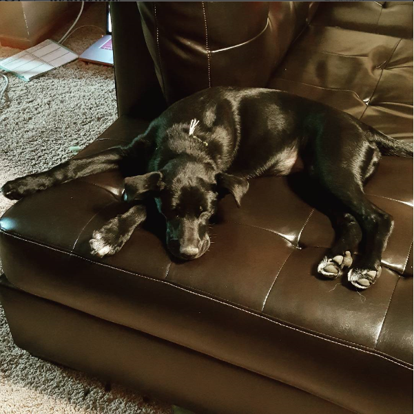

Hi everyone! My name is Cassy, and I am from Bettendorf, Iowa. I came to The University of Iowa in 2013 with plans to study Accounting. However, after an accounting internship, I knew I needed to study something more exciting. I switched to Business Analytics and Information Systems my sophomore year. Within a few months, I accepted an Application Programming internship at The University of Iowa Hospitals and Clinics in their Health Care Information Systems division. In November 2015, I was promoted to the Lead of the Student Team, where I oversee 4-7 students. Most of my day is spent assisting our Application Developers with clinical build to implement into Epic, our Electronic Health Record. I also work closely with our Data Analytics team, which is my favorite part of my internship. Additionally, I serve as the Vice Treasurer on the Board of Directors for Iowa Healthcare Information and Management Systems Society (HiMSS), an organization dedicated to improving the quality of healthcare through better use of information technology and management systems. This is my first year in a board position and my second year as a member.
When I'm not studying or interning, I am spending time with my rambunctious puppy or traveling. My boyfriend and I adopted her at 9 weeks from a home that could not care for her. According to her DNA test, she is a Lab, Husky, German Shepherd, Coonhound, Chow Chow mix, but she just looks like a baby black Lab. She loves to swim and run, so we spend a lot of time outside with her. I also love to travel and try to go somewhere new every year. Most of my family lives in Europe, so I grew up traveling all over Western Europe. My sister recently moved to Italy to pursue her dream of being an artist. My favorite places to visit are Disney World and the Caribbean.
Resume